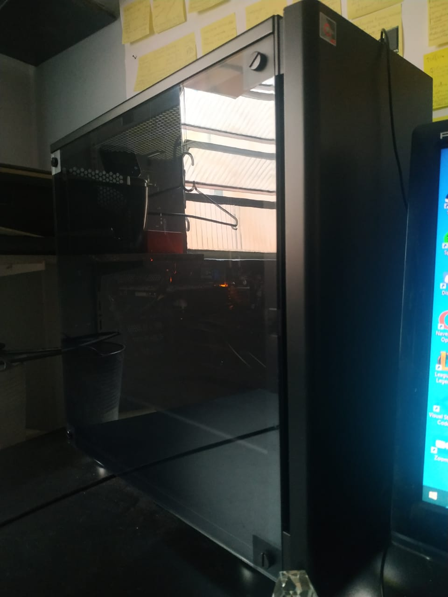
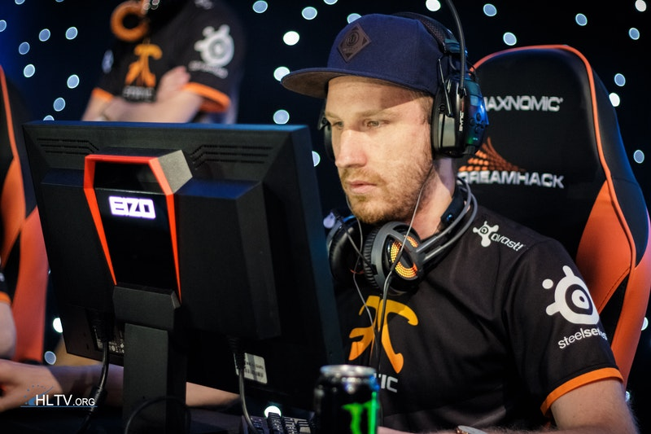

A Origem

-"Olá visitante! Meu nome é Jorge Uliam de Lima, tenho 19 anos e sou de São Paulo.
Descobri os games muito cedo. Tive meu primeiro contato com 6 anos, quando ganhei o playstation 1 do meu
primo!
Depois tive um playstation 2 e bem depois um computador, onde uso até hoje! Sempre gostei de jogar pois era
uma bolha
de paz para mim, e eu gostava de desafios e evolução para passar nas fases!"

PlayStation1
A Descoberta
"O computador foi o que eu mais usei. Desde 2009 até hoje, pois é onde
eu encontro tudo que eu gosto, curiosamente descobri também o ramo que quero trabalhar e viver dele,
Analista e desenvolvedor
de
sistemas! Esse site tem um jogo específico como tema, o Counter Strike: Global Offensive, jogo que
eu conheci em 2015.
Esse jogo me atraiu muito por causa do seu lado competitivo. Essa época havia muitos campeonatos de cs
(counter strike) e eles me inspiravam muito. Queria ser o melhor, queria competir, queria me desafiar todo
dia a melhorar no jogo! O que me movia era o sonho de um dia representar o Brasil no competitivo de cs!"

Meu atual computador! <3

Esse é o olofmeister, jogador profissional de cs, o melhor jogador de 2015, a
minha primeira inspiração! (clique na imagem)
O Aprendizado
Joguei cs desde 2015 até os tempos de hoje. Aprendi muito durante esse tempo e hoje, com
outros focos e sonhos, levo esse aprendizado para toda vida. Nele eu vi que através de foco e determinação você
pode alcançar resultados, que a busca da melhora vale a pena. Além disso aprendi outras coisas como
liderança, empatia, cooperação e coragem! Como dizia Racionais: "Eu sempre fui um sonhador, e é isso que
me mantém vivo. Aê "menor", vai buscar o que é seu porque o que é seu só você pode alcançar. Nunca deixe de sonhar".

"Eu pertenço ao melhor" -Olofmeister